Le Responsable — Visuels du jeu
23 illustrations et 18 pièces d’interface. Références originales conservées dans art/LE RESPONSABLE. Créations avec imagegen intégré ; exports prêts pour le jeu.
Vie de quartier
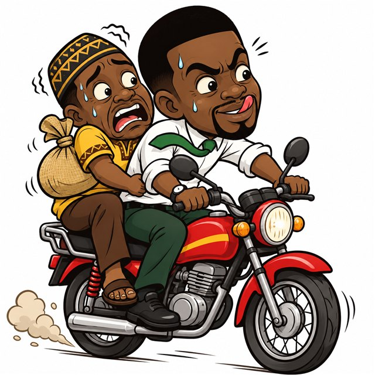
Faire le benskin (Rue JCD, Rue des BAOs)menu-benskin.jpgBayam-sellam (Marché)menu-bayam.jpgTenir le call-box (Rue JCD)menu-callbox.jpgCours de répétition (Education)menu-repetiteur.jpg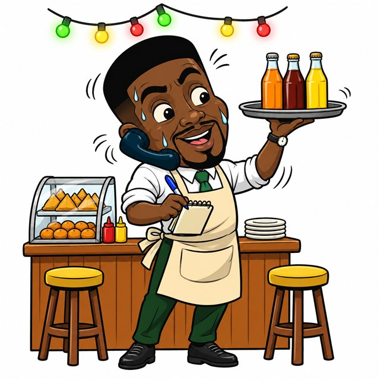
Gérer le snack (Club matango, Rue du Njoka)menu-snackjob.jpg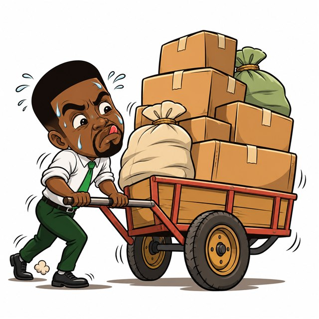
Pousser et charger les colis (Nsimaport, Supermarché)menu-pousseur.jpgBeignets-haricots-bouillie (Marché)menu-bhb.jpgManger au tourne-dos (Marché)menu-tournedos.jpg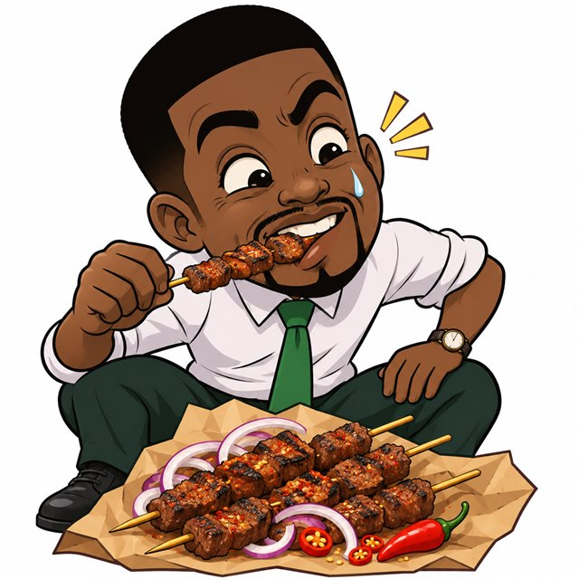
Soya bien pimenté (Rue du Njoka, Club)menu-soya.jpg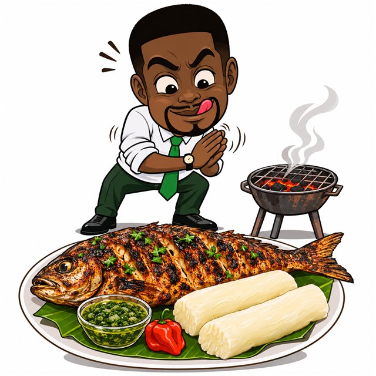
Poisson braisé et bobolo (Rue du Njoka)menu-braise.jpg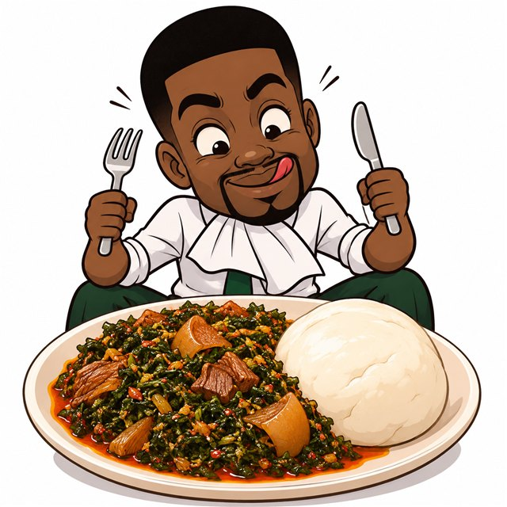
Eru · water fufumenu-eru.jpgKoki · plantain mûrmenu-koki.jpgOkok · bâton de maniocmenu-okok.jpgAchu · sauce jaunemenu-achu.jpg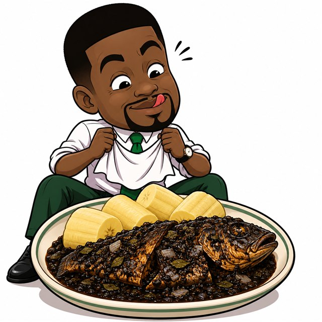
Mbongo tchobi · poissonmenu-mbongo.jpgKondrè de chèvremenu-kondre.jpg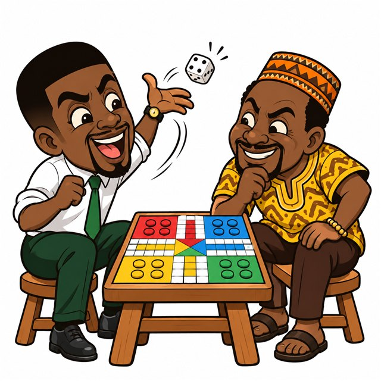
Partie de ludo (Cité des palmiers, Mboa village)menu-ludo.jpg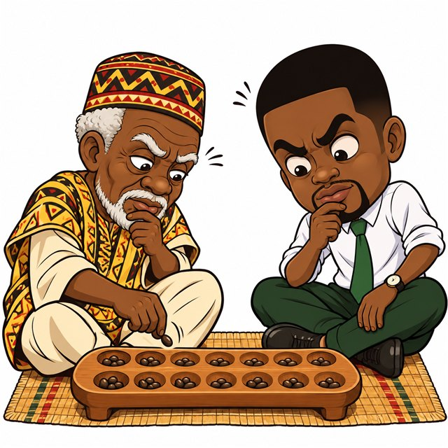
Partie de songo (Mboa village)menu-songo.jpgMatch des Lions au bar (Club, Rue du Njoka)menu-lions.jpg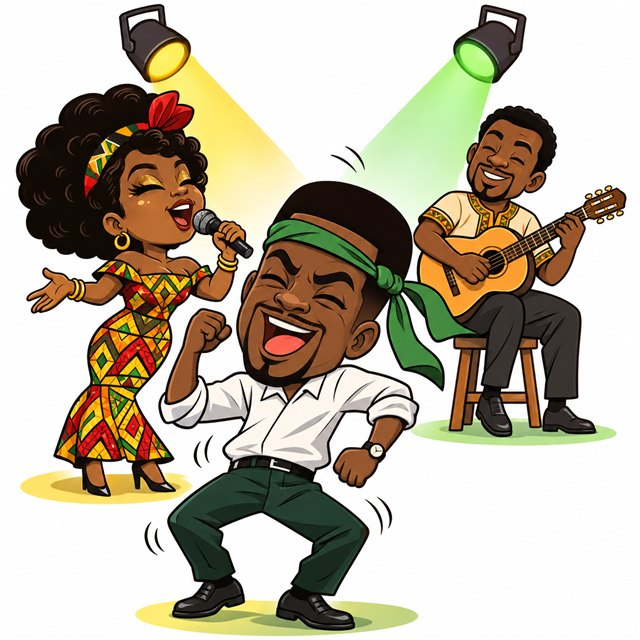
Soirée cabaret (Rue du Njoka)menu-cabaret.jpg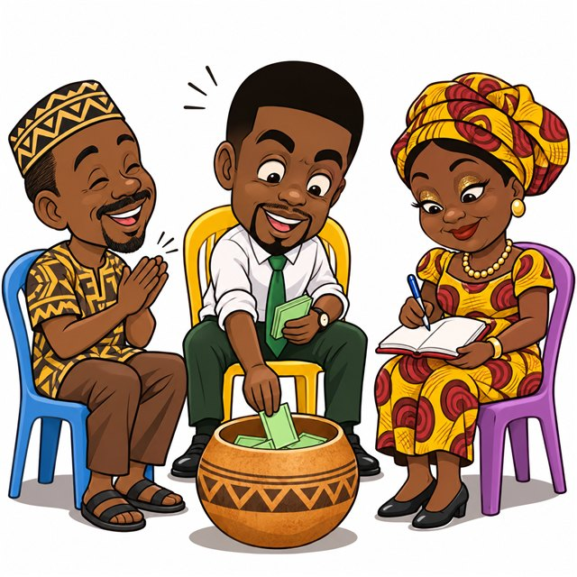
Réunion de la tontine (Cité des palmiers)menu-tontine.jpg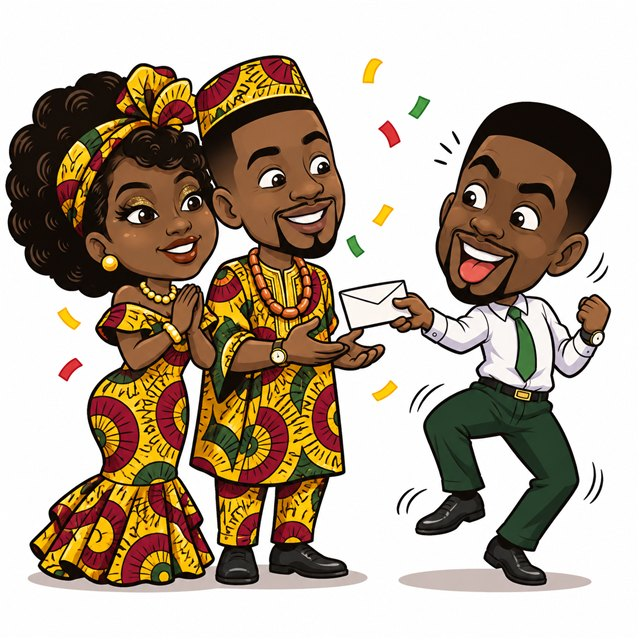
Mariage au village (Mboa village)menu-mariage.jpg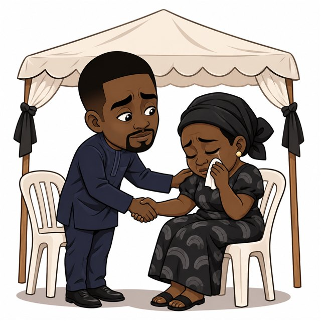
Deuil au quartier (Mboa village)menu-deuil.jpgKit du bureau
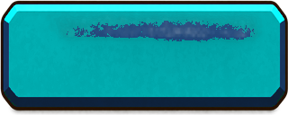
button-primary.png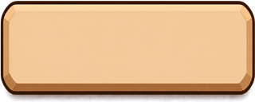
button-secondary.pngcard.pngclose.pnghud.pngicon-bills.pngicon-ceremony.pngicon-dossier.pngicon-energy.pngicon-level.png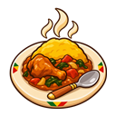
icon-meal.pngicon-mood.pngicon-savings.pngicon-sleep.png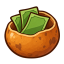
icon-tontine.pngicon-transport.png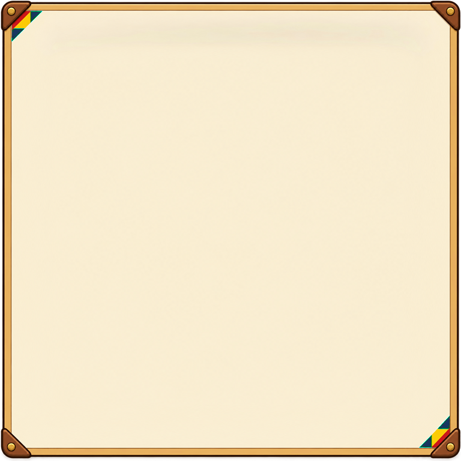
panel.pngplaque.pngTransports corrigés avec les références du Respo
walk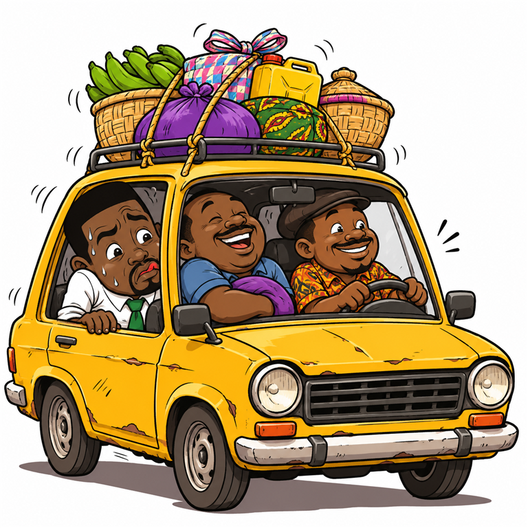
taxi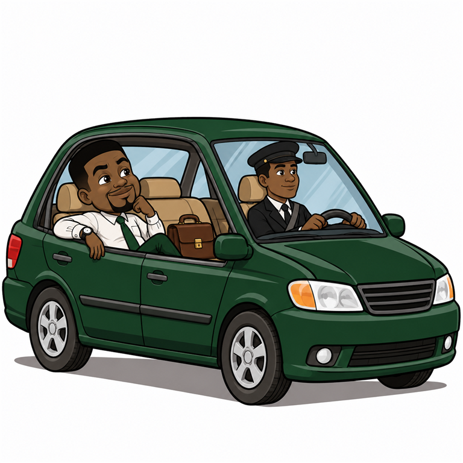
yonga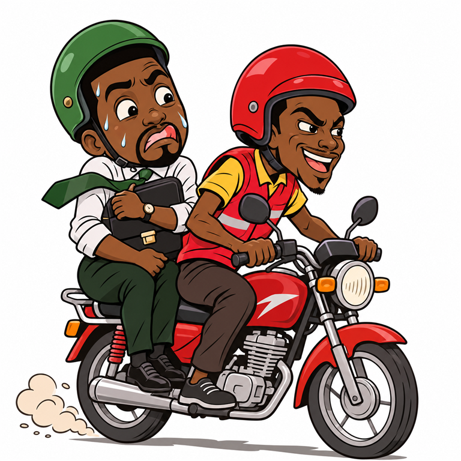
motoSommeil du Respo